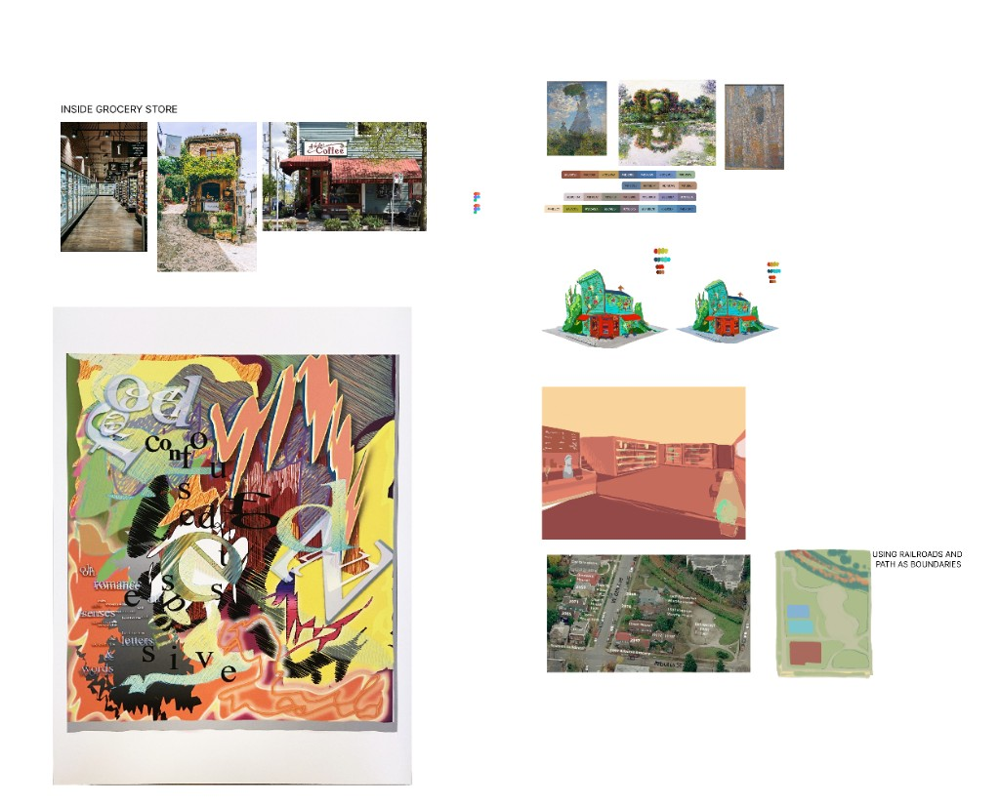
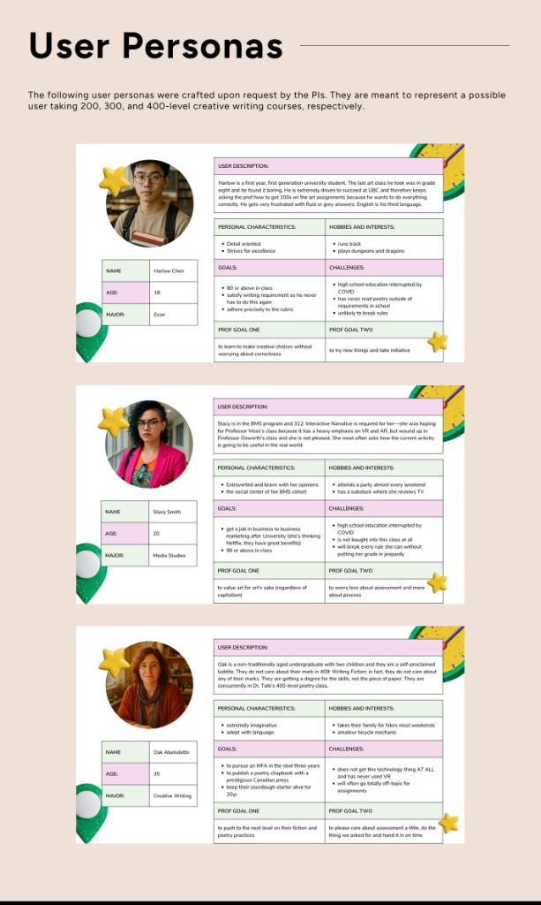
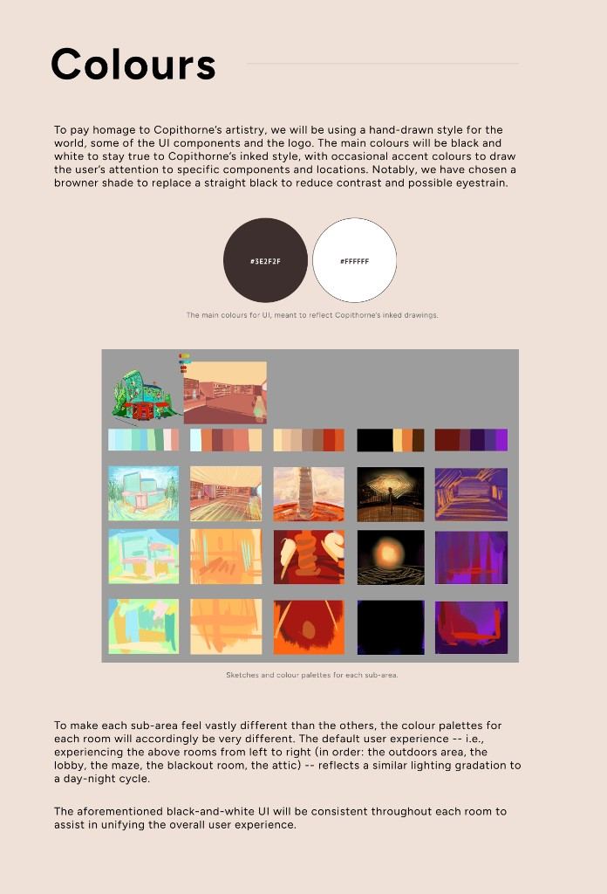
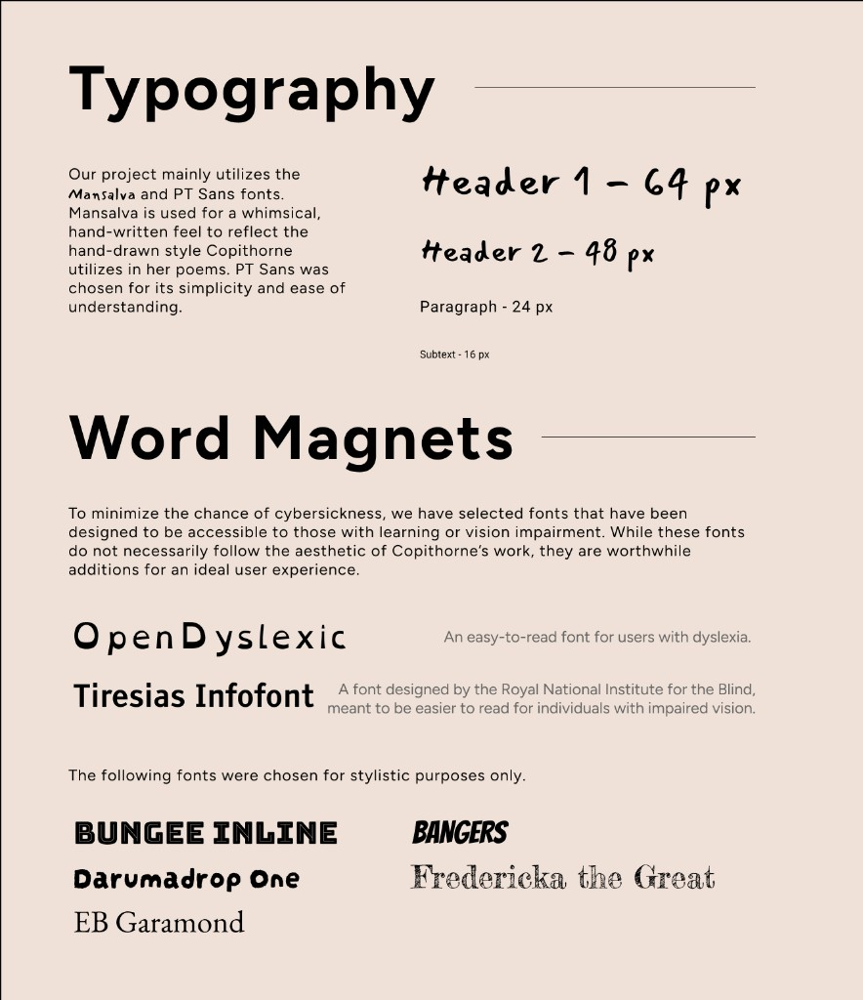
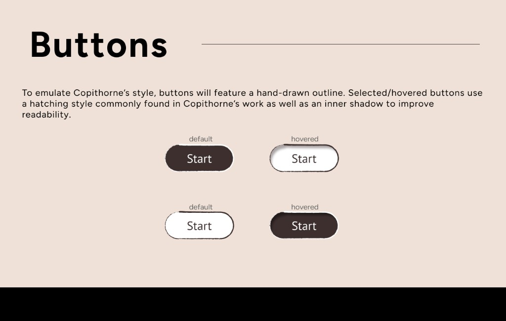
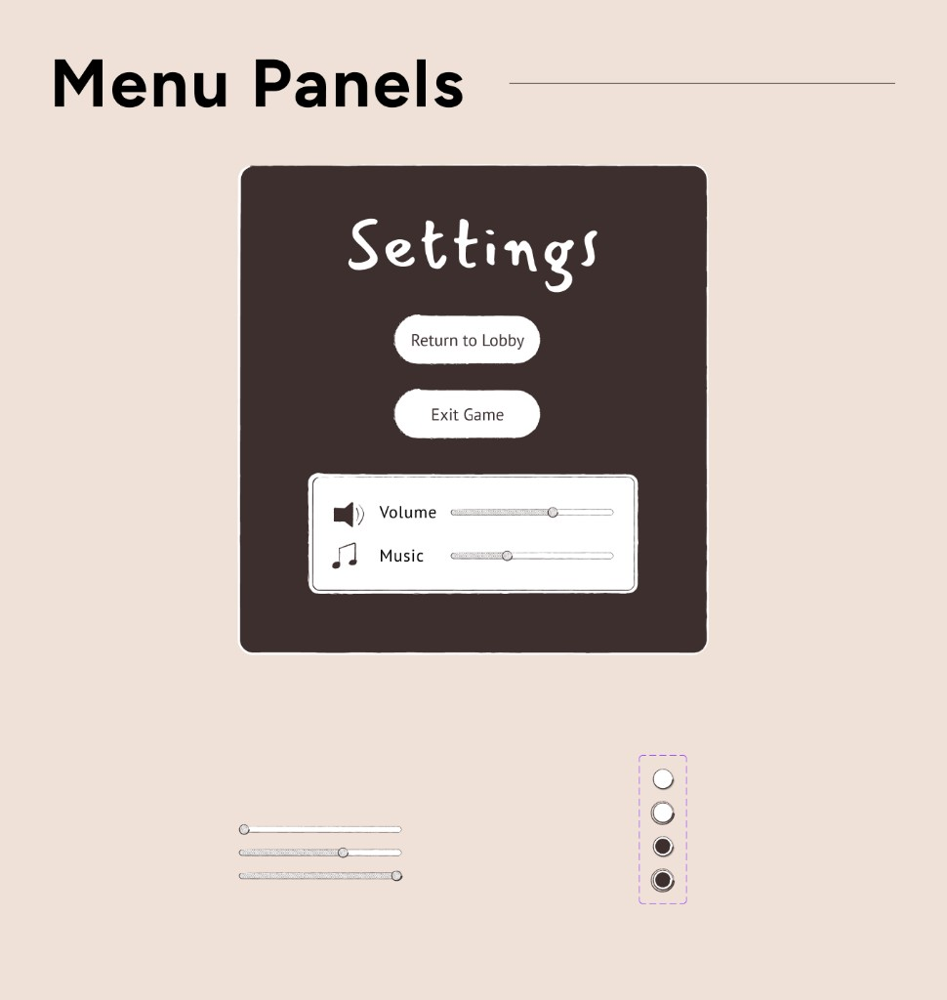
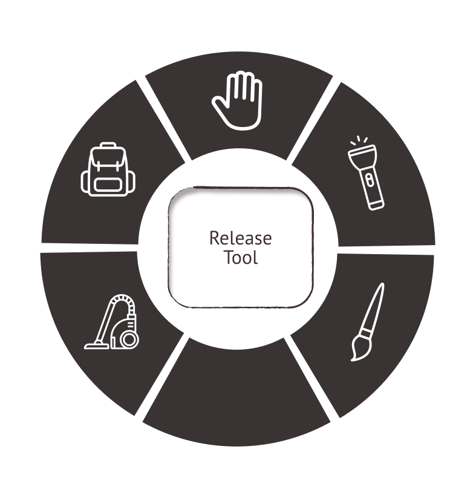

Designing a VR experience to learn, experiment with poetry, and resist AI-generated text.
Role
UX/UI Designer
Type
Experimental VR
Tools
Unreal Engine 5, Figma, Perforce, Meta Quest, Blender, Substance Painter, Photoshop, User testing
Year
May 2025 – April 2026
Team
Emerging Media Lab — UBC Creative Writing. Researchers, artists, developers, and stakeholders.
ProblemAn intentionally strange world
How do you design an interface for a world that is meant to feel surreal? The challenge was not only to make the experience functional. It was to preserve its artistic language while making sure people knew where to go, what they could do, and how to stay comfortable while exploring.
SolutionA world that communicates
After a mid-project platform migration, I redesigned the experience around a clearer interaction system—reusable UI components and patterns that could grow with the project instead of solving each new level as a one-off.
ResultA scalable UX foundation
Over twelve months, I helped establish the UX foundation for a multi-year VR research project—balancing artistic vision, technical constraints, and what users actually did once they put on the headset.
Impact
12
Months in the headset
Research, iteration, and cross-disciplinary collaboration
1
Reusable interaction system
Patterns that could grow with new levels
3
University course
Used in a UBC Creative Writing (CRWR) course for students to explore poetry through VR
Project demo
Context
How do you design an interface for a world that is intentionally strange?
Procedural Poetry Funhouse is an immersive VR experience inspired by Judith Copithorne’s visual poetry. Over roughly twelve months, I worked as the UX/UI designer alongside artists, researchers, and developers to rethink how people move through, understand, and interact with the experience.
The challenge was not simply to make the experience functional. It was to preserve its surreal artistic language while making sure users knew where to go, what they could do, and how to stay comfortable while exploring.

From grocery-store and cafe references to visual poetry, color studies, and early spatial maps.
Problem
A new platform meant rethinking the experience
Midway through development, the team migrated the project to a new development platform. Existing interactions could no longer be carried over directly.
Rather than treating the migration as a technical rebuild, I used it as an opportunity to step back and ask:
What does the user actually need to understand at each moment of the experience?
I mapped the existing interaction flow, identified where information and actions were becoming fragmented, and worked with the development team to redesign the experience around a clearer interaction system.
This led to a reusable set of UI components and interaction patterns that could grow with the project instead of solving each new level as a one-off problem.
Goals + North Star
What does the user actually need to understand at each moment?
The goal was to let users spend less attention figuring out the interface and more attention experiencing the poetry.
Orient. Could they tell where to go next?
Act. Did the interaction feel intuitive, or did they hesitate?
Stay. When did the experience become overwhelming—or make people want to leave?
Scale. Could the next level reuse the same interaction language?
Process + Key Insights
Designing from what users actually experienced
A VR experience can look beautiful on screen and still feel confusing—or uncomfortable—the moment someone puts on the headset.
To understand that gap, I participated in user interviews and testing sessions, gathering observations and feedback about how people navigated the environment, understood interactions, and responded to different moments of the experience.
I looked beyond whether someone could technically complete a task.
01
The headset gap
Beauty on a monitor did not predict comfort or clarity in VR. Observation had to happen inside the experience.
02
Navigation is a system
Disorientation and motion sickness were not only a locomotion problem. They came from the relationship between movement, visual information, pacing, and orientation.
03
The interface was interrupting the poem
Conventional UI pulled attention away from the artwork. Color, light, spatial cues, and character guidance could communicate while remaining part of the world.
I organized these observations into usability problems and used them to guide subsequent iterations.

Personas requested by the PIs, representing students in 200, 300, and 400-level creative writing courses.

A consistent ink-and-paper UI, with each room shifting through a day-to-night color cycle.

Mansalva and PT Sans for the world, plus accessible and stylistic fonts for word magnets.
Scroll right to see more design →
Design 1/3
Making the environment communicate
One of the clearest problems emerged around navigation.
Early testing showed that users could become disoriented while exploring the environment, while movement itself could contribute to motion sickness. The problem wasn’t just the locomotion system—it was the relationship between movement, visual information, pacing, and orientation.
I researched VR locomotion principles and experimented with movement speed, visual anchors, interaction cues, and control complexity.
Instead of adding more instructions, I focused on making the environment itself communicate.

Buttons with a Copithorne-inspired hand-drawn outline and hatched hover state.

In-world settings panel: return to lobby, exit, and audio controls.

Radial tool menu for spatial interaction without overlaying conventional UI.
Scroll right to see more design →
Design 2/3
Designing for engagement, not just usability
As I tested different interactions, I began looking at the experience as a journey rather than a collection of features.
I considered where users became engaged, where the flow slowed down, and where interactions interrupted the atmosphere.
This changed how I approached the UI.
Rather than introducing conventional interface elements wherever information was needed, I explored how color, light, spatial cues, animation, and character guidance could communicate information while remaining part of the world.
I also created emotion and color studies for different levels to help connect the interaction design with the emotional atmosphere of each environment.
The interface became less about placing controls on top of the artwork—and more about making the artwork itself part of the interaction language.
Design 3/3
Working between people, ideas, and technical constraints
Because the project brought together artists, researchers, and developers, many design problems were also communication problems.
I regularly translated between different perspectives: an artist's visual intention, a researcher's question, a developer's technical constraints, and a user's actual experience.
When something wasn't working, my role was often to ask why before proposing a solution.
Was the interaction unclear?
Was the visual hierarchy wrong?
Was the user missing a cue?
Was the system technically constrained?
Or was the experience simply asking too much from the user at once?
This process helped me communicate design decisions with the team while keeping the user's experience at the center of the discussion.
The Result
A scalable UX foundation for a multi-year VR research project
Over approximately twelve months, the work brought together:
User research — interviews, user testing, observation, and feedback analysis
Cross-disciplinary collaboration — communicating design decisions between artists, researchers, and developers
Technical implementation — designing within the realities of Unreal Engine and an evolving development pipeline
Reflections
Watch the gap between intention and experience
The biggest lesson was that designing for immersive experiences is not about predicting the perfect solution from the beginning.
It is about watching what people do, listening to what they say, finding the gap between intention and experience, and iterating until the two become closer.